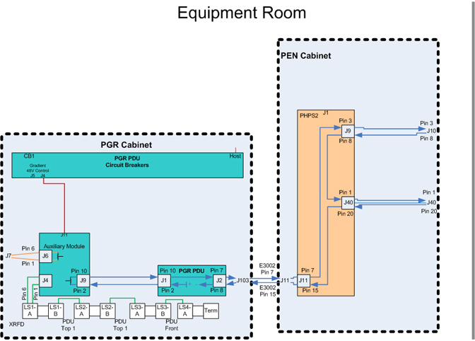
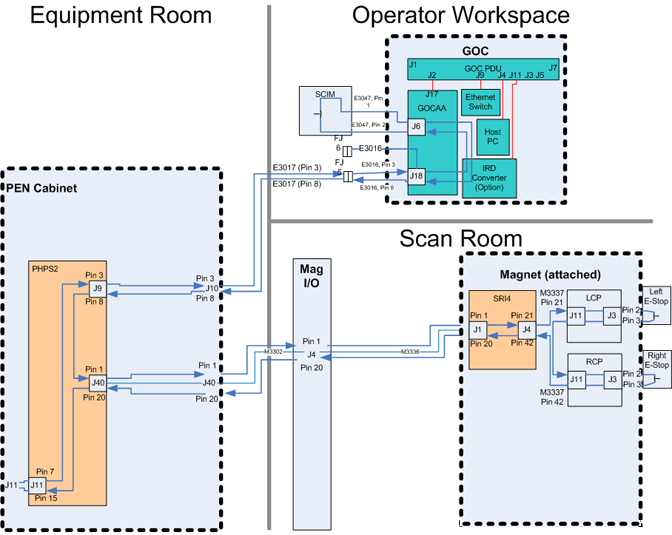
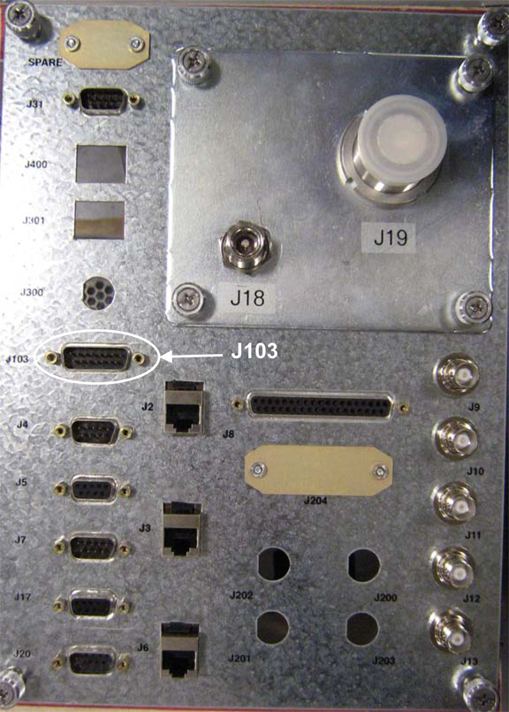
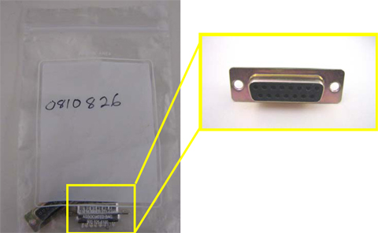
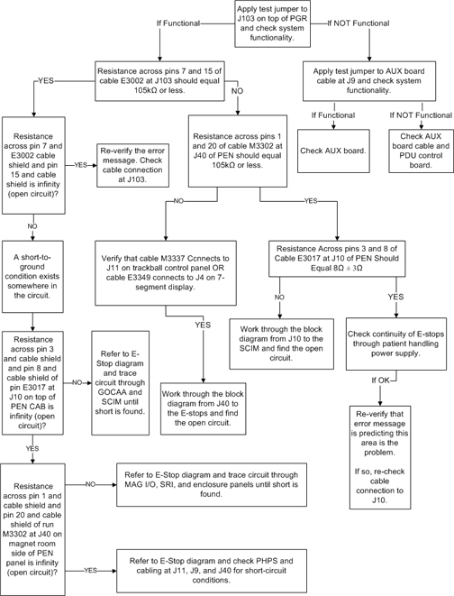
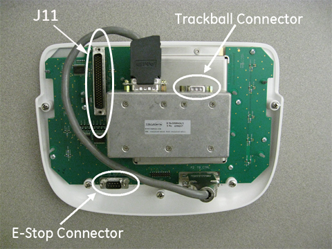
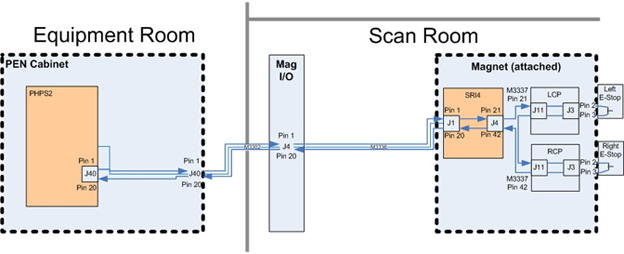
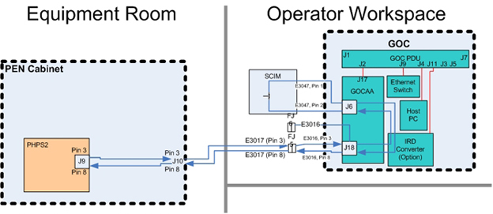

Operating Documentation
Direction 5670000, Rev# 1
Optima MR450w 1.5T Service Methods
Module Version 13.0, Version Date 11/19/09
Operating Documentation |
| Required Persons | Preliminary Reqs | Procedure | Finalization |
|---|---|---|---|
| 1 | Not Applicable | Not Applicable | Not Applicable |
This document describes troubleshooting procedures for emergency stop errors. Error indicates an issue in the emergency stop circuitry. Troubleshooting the emergency stop circuitry consists of three functional areas; equipment room, scan room, and operator's room.
See Illustration 1 and Illustration 2. To reference all the block diagrams, see Interactive Block Diagrams.
Illustration 1: Emergency Stop Cabling - PGR Cabinet to PEN Panel

See Illustration 2.
Illustration 2: Emergency Stop Cabling - PEN Panel to Workstation and Magnet Enclosure

| Item | Qty | Effectivity | Part# | Manufacturer | |
|---|---|---|---|---|---|
| Sub-D Jumper (female) | 1 | - | - | - | |
| Sub-D Jumper (male) | 1 | - | - | - | |
| Digital Multimeter | 1 | - | - | - | |
| ||||
| ELECTRICAL SHOCK HAZARD | ||||
| CONTACT WITH CONNECTORS LEADING TO AN ENERGIZED POWER SUPPLY CAN CAUSE ELECTRICAL SHOCK. | ||||
| FOLLOW LOCKOUT/TAGOUT PROCEDURE WHILE PERFORMING SERVICES TO ELECTRICAL CONNECTION COMPONENTS. |
| Condition | Reference | Effectivity |
|---|---|---|
Power to the PGR cabinet is turned off and LOTO procedures are implemented. | - | - |
This test is performed to determine condition of the emergency stop circuitry in the PGR cabinet or the magnet enclosure.
Verify system has been shut down and LOTO procedures are implemented for the PGR cabinet.
Disconnect cable E3002 from connector J103 located on the connector panel located on the top of the of the PGR cabinet. See Illustration 3.
Illustration 3: PGR Cabinet Connector Panel

Connect 15-pin Sub-D female jumper to J103 (see Illustration 4) on the PGR cabinet connector panel.
Illustration 4: 15-pin Sub-D Female Jumper

Restore power to the PGR cabinet.
Press green EMO Reset button on front of PDU to reset E-Stop circuit.
Verify operation of E-Stop circuit and confirm that RF amplifier and PHPS powers on. See Illustration 5 for a flow chart of troubleshooting activities.
If system appears functional and error disappears, perform Resistance Test.
If system is not functional and error still appears, perform Auxiliary Board Bypass Test.
Illustration 5: Troubleshooting Flow Chart

This test is performed to determine condition of the emergency stop circuitry in the PGR cabinet.
Verify system has been shut down and LOTO procedures are implemented for the PGR cabinet.
Disconnect cable E3017 from connector J9 of the AUX PWB Enclosure Assembly. See Illustration 6.
Illustration 6: AUX PWB Enclosure Assembly

Connect male Sub-D jumper to cable (see Illustration 7) E3017 from connector J9 (disconnected from the AUX board enclosure).
Illustration 7: 15-pin Sub-D Male Jumper

Restore power to the PGR cabinet.
Press green EMO Reset button on front of PDU to reset E-Stop circuit.
Verify operation of E-Stop circuit and confirm that RF amplifier and PHPS powers on. See Illustration 5 for flow chart of troubleshooting activities.
If system is appears functional and error disappears, check Auxiliary Board and replace, if necessary.
If system is not functional and error does not disappear, check auxiliary board cable and if okay, replace PDU Control Board.
This test is performed to determine condition of the emergency stop circuit.
Using a multimeter, check that the resistance between pins 7 and 15 of cable E3002 (disconnected from J103 on the connector panel located on the top of the PGR cabinet) is 105 kΩ or less.
If reading is out of range, proceed to step 2.
If reading is within range, reverify that the error message is indicating an emergency stop issue. If yes, then check cable E3002 connectivity to J103.
Using a multimeter, verify the resistance between pins 1 and 20 of cable M3302 (disconnected from connector J40 on the PEN panel) is 105 kΩ or less.
If reading is within range, proceed to step 5.
If reading is out of range, proceed to step 3.
Verify that cable M3337 is connected to J11 in the Control Panel board. On the back of the control panel, the E-stop cable connection and the Trackball cable connection are of the same size and gender, and thus can be accidentally interchanged. Confirm that the cables are connected properly, otherwise the E-stop circuit will not be resettable. See Illustration 8. If connections are correct, proceed to Step 4.
Illustration 8: Operator Control Panel

Using the block diagram as a guide (see Illustration 9), start at J40 of the PEN panel and work your way through the emergency stop circuit to each of the emergency stop enclosures looking for the open circuit.
Illustration 9: PEN Panel to Magnet Enclosure E-Stop Block Diagram

Using a multimeter check continuity of emergency stop paths between J9, J11, and J40 connectors on PHPS. Refer to complete E-Stop diagrams located in Power section of System Interactive Block Diagrams for relevant connector pins.
If reading is within range, proceed to step 6.
If reading is out of range, use the block diagram as a guide (see Illustration 10), start at J10 of the PEN panel and work your way through the emergency stop circuit to SCIM emergency stop looking for the open circuit.
Illustration 10: PEN Panel to SCIM E-Stop Block Diagram

Using a multimeter, check continuity of emergency stop connections through the Patient Handling Power Supply.
If connections are OK, reverify that the error message is indicating an emergency stop issue. If yes, then check cable E3017 connectivity.
If connections are not OK, replace PHPS.
No finalization steps.